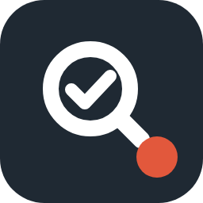

這堂課值得上嗎
花錢之前，先分清楚到底是資訊焦慮，還是這門課真的適合你。
填四格，一鍵把"課程盡職調查"丟給 ChatGPT、Gemini、Claude 或 Perplexity，去 PTT、Dcard、Threads、方格子、YouTube 留言翻真實心得，順便把講師的底細查一遍，最後給出買／不買的結論。
填你的資料
越具體，結論越準
Prompt 版本
完整版：六段輸出、含證據分級與紅旗清單。太長無法塞進網址，按鈕會幫你複製，開好新對話後貼上即可。
送出調查
需先登入該平台
Prompt 預覽0 字
載入中…
01 · 為什麼做這個
評價牆的好評，是賣課的人自己挑的
線上課的評價牆，100 則全是好評，因為那是賣課的人自己挑的。最關鍵的一條規則是：查不到負評，就直說查不到，並解釋為什麼（課太新？社群在 Discord 私域？）。
02 · 怎麼用
三步，不用註冊
填四格
課程網址、你的背景、想解決的問題、預算。越具體，結論越準。
選版本
完整版給任何一家 AI；精簡版能塞進網址自動帶入；Threads 版配 Meta AI 專撈零散評價。
送出調查
每個按鈕都會先複製到剪貼簿。能預填的平台會自動帶入，不能的就開好新對話貼上。
| 版本 | 長度 | 搭配 | 行為 |
|---|---|---|---|
| 完整版 | 約 2,100 字 | 任一家 | 七段輸出。太長塞不進網址，按鈕會複製，開好新對話後貼上 |
| 精簡版 | 約 750 字 | ChatGPT／Claude／Perplexity | 壓到能塞進網址，會自動帶入問題 |
| Threads 版 | 約 1,400 字 | Meta AI | 只蒐證不下結論，走複製後貼上 |
03 · 它會幫你查什麼
不只查評價，也查講師本人
讀官方頁面你買的是什麼
定價、是否買斷、退費政策、單元數、最後更新，以及有沒有單元還標著"製作中"（你買的是期貨）。
找真實聲音官網以外的地方
PTT、Dcard、Threads、FB 公開社團、方格子、部落格、YouTube 留言。正評向與負評向的關鍵字都要搜。
查講師本人課程品質的上游
分成兩欄：可交叉驗證的事實，和只有他自己說、找不到佐證的宣稱。最後回答一句話：他是這個領域的實作者，還是主要在教這個領域？
找替代方案機會成本
免費資源夠不夠用。講師的免費內容，通常就是付費內容的下限。
04 · 證據分級
每一則評價都要蓋章
AI 上網查評價最常見的失敗，是抓到廠商官網那面"100+ 則學員好評"的牆，就下結論說口碑很好。
第三方獨立長文心得
可信度最高
論壇與社群零散討論
看趨勢，不看單則
帶折扣碼或聯盟連結的推薦文
當廣告看
廠商官網的學員見證
不得作為口碑證據
05 · 九個紅旗
報告最後逐項檢查
每一項標成 ✅ 沒問題、⚠️ 要留意、🚩 高風險。
- 飢餓行銷與倒數計時
- 無退費政策
- 承諾收入或效果
- 只有廠商自營證言
- 課程尚未完成卻已開賣
- 社群封閉查不到真實回饋
- 講師無可查證的實作成果
- 講師經歷無法交叉驗證
- 內容可被免費資源取代
06 · 誠實規範
這是整段 prompt 最重要的部分：沒有負評，不等於口碑好。不准編造評價或連結，每則引用附真實網址；區分查證到的事實與推論；官網沒公開價格就說沒公開，不要猜一個數字當事實。
07 · 常見問題
常見問題
要錢嗎？要註冊嗎？
都不用。免費、不用註冊、開源，打開就能用。
我填的資料會被收走嗎？
工具本身是一個靜態網頁，沒有後端。填過的內容只存在你自己的瀏覽器，下次開還在；按下送出後，內容會交給你選的那一家 AI。
為什麼有些平台要自己貼上？
各家 AI 的預填參數是慣例，不是公開 API，Gemini 和 Meta AI 也沒有公開的預填參數。所以每個按鈕都一定會先複製到剪貼簿，預填只是加分項，失效了也不影響使用。
AI 給的結論可以直接相信嗎？
不行。AI 產出的調查結果仍需自行查證，引用連結請點開確認。這也是為什麼 prompt 要求每則引用都附真實網址。
Threads 版是做什麼的？
Threads 上其實有評價，只是外部搜尋引擎抓不到，真話往往在留言串裡。Threads 版配 Meta AI 用，只負責把清單撈出來、不下結論，跑完再貼回完整版的報告當 B 級證據。
可以拿去改嗎？
隨你用，改了拿去分享也可以。原始碼在 GitHub。
做這個工具的人
嗨，我是 Eric
前聯發科資深技術經理（E10），兩次創業。我想幫跟我一樣，在工作中感到困擾、想找到熱情的人，用 AI 去嘗試、去發現讓自己快樂的工作。
會開啟 Substack 確認訂閱，再按一次就完成。